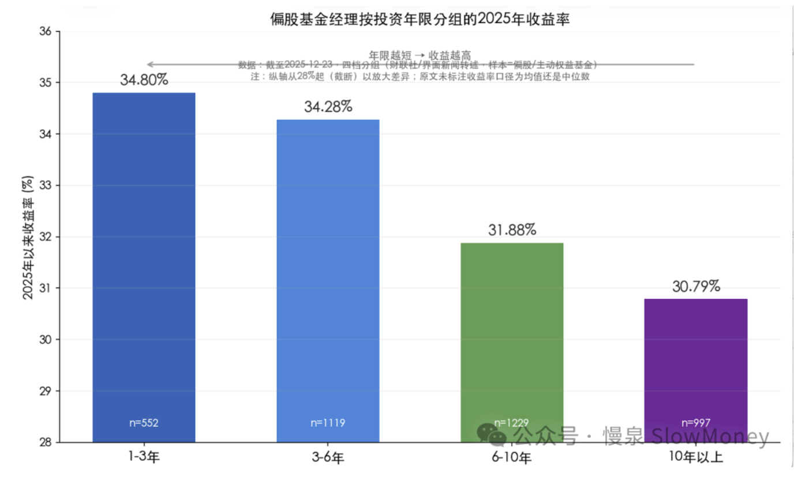
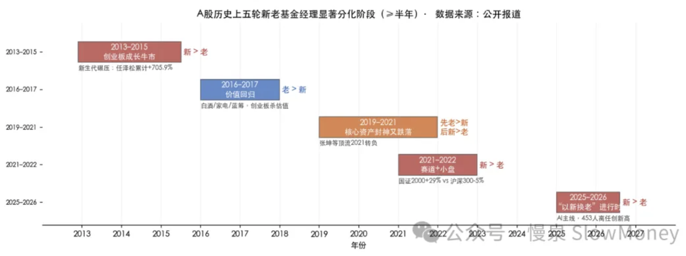
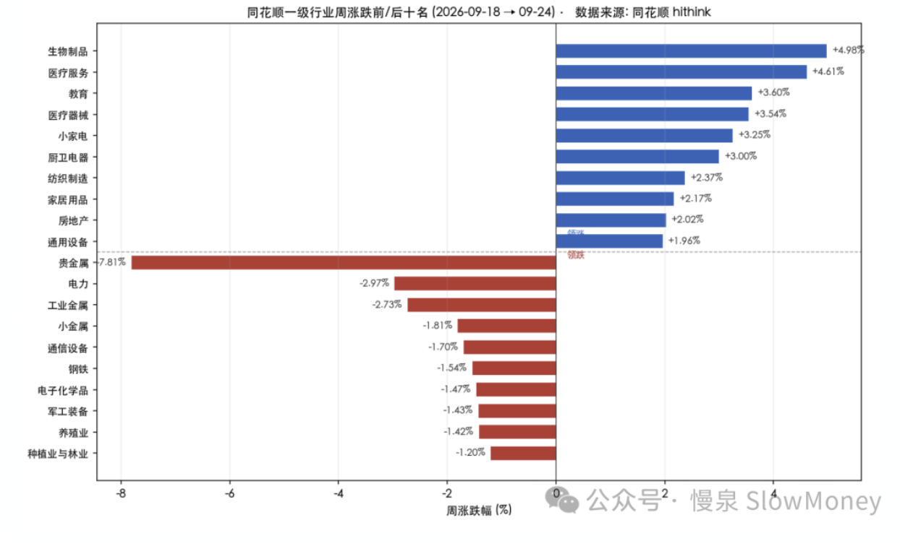

投资备忘20260927-老登vs小登
2026-09-21 — 2026-09-27 · W39 · 周度备忘（补档）
市场冲高回落，并没有尝试冲击 4000 点——总有大聪明提前抢跑，在 3966 成功阻击多头。回落同样比较克制，上上周的反弹没有被打破，而是重新回到区间震荡的格局中，符合上周的判断。节前的氛围就是缩量震荡：一方面中秋国庆该吃吃该喝喝，很多事情比开盘重要；另一方面也见了、会也开了，真变了啥，也说不好。倒是看到一张关于新老基金经理业绩差异的图，虽然是 2025 年的收益分布，但是很有意思。

业绩的代际分化：老登vs小登
历史上的五轮显著分化：
- 2013 年：抛蓝筹、买成长，小登上场，完成从混乱交易、宏观政策到成长股逻辑的第一次转变；
- 2016-2017 年：价值回归，老登限时回归；
- 2019-2021 年：核心资产封神到回落，老登封神现场——诞生质量风格的顶流，白酒、医药等消费基金；
- 2021-2022 年：赛道股行情，小登再上场——老一代讲究增长的现实（估值安全、盈利确定），新一代讲究产业趋势和空间；
- 2025 年：科技 AI 行情，小登封神、老登退场——2025 年内离任基金经理 453 人创历史新高，同期 593 位新基金经理上任，超 5000 只产品出现变动，覆盖超 130 家机构。

分化成因拆解：
产业周期和赛道变迁——基本面的决定因素。每一轮成长牛市都对应一个真实的产业浪潮：2013-2015 移动互联网/创业板，2019-2021 新能源/半导体，2025-2026 AI/半导体/新经济。新生代基金经理天然贴近当期产业，理解与捕捉能力更强，这是代际优势的产业基础。
风格周期——估值的决定因素。新老分化的方向，几乎完全由"成长 vs 价值"的轮动方向决定：2013-2015 成长占优→新生代赢；2016-2017 价值占优→老价值派回血；2021、2025-2026 成长/赛道占优→新生代再赢。
资金结构——对高度和持久性的影响。2016 年后外资 + 机构化强化了价值/龙头定价；2021 年后量化 + 游资/散户化强化了小盘题材活跃。资金生态的切换，决定了哪个代际/风格的基金经理更容易"踩对"。
代际认知差异：老一代经历多轮牛熊，重视估值安全边际与盈利确定性；新一代更看重产业趋势与业绩预期。两种框架在各自适配的市场阶段都能赢，错配时则系统性落后。
过程和当下：
风格反身性的规律：成长（新占优）——分化机制——泡沫——风格反转、均值回归——价值回归——价值叙事——再循环。
赛道选手黄金期：无论是从 2021 年还是 2025 年，踩中新能源、AI 意味着产业趋势投资的时代红利全部抓住。
老登的退出对老登股的影响：老登股很多是时代的眼泪，老登不一定。
老登和小登的差异不是能力本身，而是投资风格与市场阶段的匹配程度。
因为在市场上经历会造成对预期、定价、风险的判断不一样：小登是"新脑子""折旧少"，当下的投资经历在决策的占比高，对盈利有偏向（没有偏向的都被淘汰或者成为老登）；老登是"老框架""活得长"，更长的周期会影响当下判断，对控制风险有偏向。
本周市场：冲高回落、缩量震荡
本周 A 股"先扬后抑、冲高回落"——周一在医药/教育/小家电等超跌板块反弹带动下高开冲上 3950，周二触及周内高点 3952 后滞涨，周三起缩量回落，周四在美股股债双杀、美债收益率创 2007 新高、金价重挫的外部压制下缩量大跌收 3888。全周结构呈"权重杀跌、小盘题材活跃、医药/消费/地产链超跌反弹、资源/贵金属领跌"，赚钱效应弱（上涨占比仅 20.6%），量能逐日萎缩至 1.65 万亿，节前避险情绪集中释放。
本周风格呈三重分化——① 权重 > 成长：上证 50 -0.63% 显著抗跌，创业板指 -2.48%、科创 50 -1.86% 领跌；② 微盘/小盘相对活跃：北证 50 +1.09% 逆势上涨、中证 1000 -1.53% 优于中证 500 -2.25%，资金从高位科技成长与权重资源流向超跌低位题材（医药、教育、小家电、北交所）；③ 资源/贵金属领跌：贵金属 -7.81%、工业金属 -2.73%、电力 -2.97%。这是"科技成长回调 + 微盘题材活跃 + 资源权重杀跌"的高低切换格局。
美国加息预期提升：美债十年期 5%、三十年期 5.5%，十月份加息的预期大幅提升。9/23 美国 5 年/10 年期国债收益率创 2007 年以来最高，10 年期一度升破 5%——强劲服务业 PMI + 700 亿美元 5 年期国债供给冲击是主因，美联储 10 月再加息概率一度升至 70%。
医药/创新药是本周最确定主线：生物制品 +4.98%、医疗服务 +4.61%、教育 +3.60%、医疗器械 +3.54% 领涨，概念层面 CRO +3.77%、创新药 +1.95% 领涨。催化包括诺诚健华与礼来达成最高 33.5 亿美元研发合作（药物发现平台获 MNC 背书）、AI 制药验证需求爆发拉动上游试剂耗材。医药属前期超跌 + 低配方向，在科技成长回调时获资金高低切换回流。
资源/贵金属领跌：贵金属 -7.81% 是本周最大下跌方向，工业金属 -2.73%、小金属 -1.81%、电力 -2.97% 同步走弱。主因美债收益率创 2007 新高、实际利率飙升、美元走强，COMEX 黄金周跌约 1.7%、白银跌约 3.0%，无息贵金属遭正面冲击。

市场展望
模式识别：中期仍然看震荡为基准情景，而且震荡区间可能扩展成 3800-4000 的宽幅震荡，时间会比较长，类似 2021 年 2 月份之后的情况。短期走势出现了上周的第二种情况（上冲失败、向下测试 3850），当下看能走多深——但估计在节前明确的可能性比较小。
市场情绪：本周情绪收于 3.4（偏冷/谨慎），为近期低点。结构上"市场广度 2 分（上涨占比仅 20.6%）、持续性 2 分（高位股集体跌停兑现）"是主要拖累项；赚钱效应 5 分（涨停 51 家、封板率 83.6%）尚可，但属"涨停少、晋级差（1→2 板晋级率仅 21.1%）"的缩量退潮格局；量能 4 分（1.65 万亿，较 9/22 高点 2.14 万亿连续两日萎缩）。叠加 9/25 中秋休市，节前避险情绪集中释放，风险偏好同步走弱。
组合备忘
Beta 组合表现跑输市场（市场是指中证全 A -1.26%），Macro 同样下跌。本周市场下跌组合跑输，主要是资源股持仓的影响：Beta 策略本周下跌 **%、Macro 策略下跌 **%；组合仓位继续下降——Beta 策略仓位 80%，降低科技资产，其他变动不大；Macro 策略仓位 71%（其中转债 30%）。组合与市场的负超额主要是超配周期资源，而美元强势和获利资金的卖出冲击了这部分资产。
| 类别 | 仓位 |
|---|---|
| Beta 策略（降低科技资产，仓位继续下降） | 80% |
| Macro 策略权益仓位（含转债 30%） | 71% |
Beta 跑输市场 · Macro 同样下跌 · 周度涨幅不再公开播报
操作和思考：本周主要是降低敞口，防止市场下探时的冲击，一定程度上对冲了风险。节前市场对资源品的定价是 10 月份加息的定价，呈现出来就是压力较大——考虑到假日因素，可能这种负向定价还需要时间消化。
下一步（本周不变）：要充分预估困难——基金募资下降和汇率可能共振的风险，特别是在节前成交量较低的情况下很容易出现长下影或者长上影线，甚至中阴线的可能性。组合仓位需要继续控制，短期内的核心持仓保持 HALO 资产、低位资产和 AI 端侧应用资产。仓位上继续下降，组合结构上选择在节前稳定，少动多看。
- HALO 资产：10 月加息定价的负向消化中，等待压力释放；
- 低位资产：医药/消费/地产链超跌反弹的主力方向；
- AI 端侧应用资产：科技成长回调中保持关注。
上期钩子的答案：① 本轮白马祭天的性质——仍未定案：市场冲高回落、重新回到区间震荡，"确认调整结束"与"下跌中继"的分界继续向后推；② 募资砍 60% + 汇率 7 窗口的赎回负反馈——未触发赎回负反馈，但外部冲击先行：美债 10 年期一度破 5%、10 月加息概率一度升至 70%，美元强势成为主要压力源；③ 3800-4000 宽幅震荡与 3850 防守位的测试——正在兑现：上周第二种情况（上冲失败、向下测试 3850）出现，周四收 3888，节前明确可能性小；④ 第二梯队扩散——部分验证：医药/创新药成为本周最确定主线（生物制品 +4.98%），但更多体现为高低切换回流。新钩子：① 3850 防守位测试的深度与节后方向；② 10 月加息定价对资源品的负向消化还要多久；③ 医药主线（超跌 + 低配回流）的持续性；④ 老登小登代际分化——453 人离任潮下，"以新换老"对风格轮动和老登股定价的进一步影响。对账窗口：2026 年 10 月中旬。